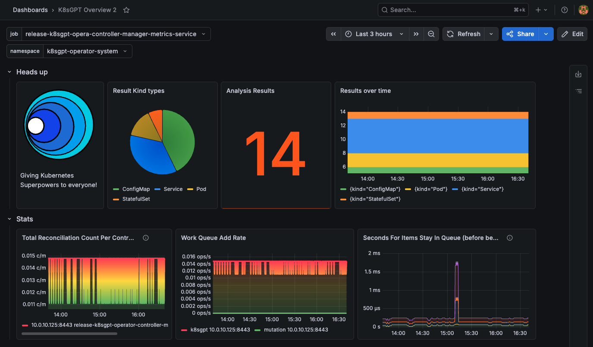
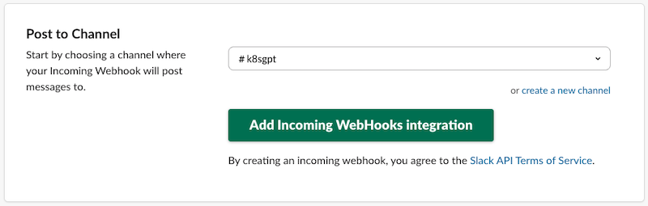
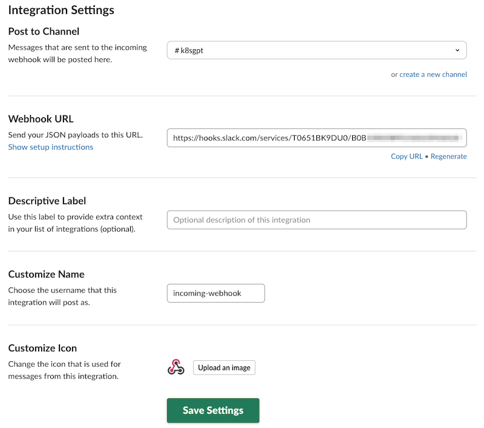
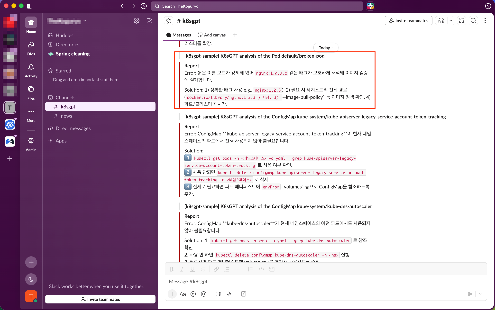

5.2 OCI GenAI와 K8sGPT로 AI기반 OKE 클러스터 장애 분석하기
K8sGPT는 쿠버네티스 클러스터 상태를 이해하고, 문제를 해결하는 데 AI를 활용할 수 있게 하는 오픈소스 툴입니다. 여기서는 OKE 클러스터에 설치하여, OCI Generative AI와 연동하여 문제를 분석하고, Prometheus, Grafana와 연동하고, Slack 메시지를 전달하는 방법을 확인해 봅니다.
설치준비
-
k8sgpt 설치 가이드에 따라 환경에 맞게 K8sGPT CLI를 설치합니다.
-
Mac인 경우
brew tap k8sgpt-ai/k8sgpt brew install k8sgpt-
설치 확인
$ k8sgpt version k8sgpt: 0.4.32 (Homebrew), built at: 2026-04-22T06:25:38Z
-
-
-
OKE 클러스터를 준비합니다.
-
OCI CLI를 설치하고, OKE 클러스터에 접근을 위한 kubeconfig 파일도 준비합니다.
K8sGPT AI Backends - OCI Generative AI 연결
방법#1. OCI AI Backend로 추가하기
pkg/ai/ocigenai.go을 보면 현재 cohere, meta 모델만 지원합니다.
-
OCI CLI 설치 및 구성합니다. CLI Profile 상의 Region을 따르니 참고하여 설정합니다.
-
사용할 Region에서 해당 모델의 ID를 확인합니다.
-
OCI GenAI 사용 권한이 있는 Compartment ID를 확인합니다.
-
아래와 같이 AI Backend를 추가합니다.
k8sgpt auth add --backend oci \ --model ocid1.generativeaimodel.oc1.ap-osaka-1.amaaaaaask7dceyadl2zbihttnofsyr5hnbfib73a5iml2dbjq52f3caobxq \ --compartmentId ocid1.compartment.oc1.... -
기본 Backend로 등록한 OCI를 선택하게 설정합니다.
k8sgpt auth default -p oci -
잘못 설정한 경우 삭제하고 다시 설정합니다.
k8sgpt auth remove -b oci
방법#2. LocalAI backend 방식으로 OCI Generative AI 추가하기
LocalAI backend는 OpenAI 호환 API인 로컬 모델을 지원하기 위한 방식입니다. supported-models-openai을 보면 OCI Generative AI 모델 중에서 현재 Llama, xAI Grok, OpenAI gpt-oss 모델이 OpenAI 호환 API를 지원합니다.
-
사용할 리전에서 OCI Generative AI API key를 생성합니다. OCI IAM의 API Key가 아닙니다.
-
Adding Key Permissions을 참조하여, OCI Generative API Key에 권한을 추가합니다.
-
예
allow any-user to use generative-ai-family in compartment <compartment-name> where ALL {request.principal.type='generativeaiapikey', request.principal.id='<your-api-key-OCID>'}
-
-
아래와 같이 AI Backend를 추가합니다.
k8sgpt auth add --backend localai \ --model openai.gpt-oss-120b \ --baseurl https://inference.generativeai.ap-osaka-1.oci.oraclecloud.com/20231130/actions/v1 -
기본 config file이 있는 k8sgpt.yaml 파일 위치를 확인합니다.
$ k8sgpt help Kubernetes debugging powered by AI ... Flags: --config string Default config file (/Users/kildong/Library/Application Support/k8sgpt/k8sgpt.yaml) ... -
k8sgpt.yaml 파일을 수정하여, password 항목을 추가하고 앞서 생성한 OCI Generative API Key를 입력합니다.
ai: providers: - name: localai model: openai.gpt-oss-120b password: sk-q7... baseurl: https://inference.generativeai.ap-osaka-1.oci.oraclecloud.com/20231130/actions/v1 ... ... -
기본 Backend로 등록한 OCI를 선택하게 설정합니다.
k8sgpt auth default -p localai -
잘못 설정한 경우 삭제하고 다시 설정합니다.
k8sgpt auth remove -b localai
클러스터 분석 테스트
-
Broken Pod 예제 파일(
broken-pod.yml)을 생성합니다.apiVersion: v1 kind: Pod metadata: name: broken-pod namespace: default spec: containers: - name: broken-pod image: nginx:1.a.b.c livenessProbe: httpGet: path: / port: 81 initialDelaySeconds: 3 periodSeconds: 3 -
잘못된 이미지를 사용하고 있지만, 그대로 배포합니다.
kubectl apply -f broken-pod.yml -
상태를 확인합니다.
$ kubectl get pods NAME READY STATUS RESTARTS AGE broken-pod 0/1 ImageInspectError 0 5s -
K8sGPT CLI로 분석을 실행합니다. 클러스터 내에 발생한 이슈가 리스트됩니다. 아직 AI 모델과 연동되어 분석되지는 않은 상태입니다.
$ k8sgpt analyze W0501 23:24:11.891533 4579 warnings.go:70] v1 Endpoints is deprecated in v1.33+; use discovery.k8s.io/v1 EndpointSlice AI Provider: AI not used; --explain not set 0: ConfigMap kube-public/cluster-info() - Error: ConfigMap cluster-info is not used by any pods in the namespace ... -
AI 사용해 분석합니다.
-
OCI AI Backend 기준 분석하기 - Error 밑에 AI가 분석한 Solution이 표시됩니다.
$ k8sgpt auth default Your default provider is oci $ k8sgpt analyse --explain -l Korean -n default W0501 23:55:29.187032 5640 warnings.go:70] v1 Endpoints is deprecated in v1.33+; use discovery.k8s.io/v1 EndpointSlice 100% |████████████████████████████████████████████████████████████████████████████████████████████████████████████████████████████████████████████████████████████████████████████| (2/2, 1 it/s) AI Provider: oci 0: ConfigMap default/kube-root-ca.crt() - Error: ConfigMap kube-root-ca.crt is not used by any pods in the namespace Error: Kubernetes에서 "kube-root-ca.crt" ConfigMap이 네임스페이스 내 어떤 Pod에서도 사용되지 않습니다. Solution: 1. ConfigMap을 사용하는 Pod가 있는지 확인하세요. 2. Pod의 YAML 파일을 확인하여 ConfigMap이 올바르게 참조되는지 확인하세요. 3. 필요하지 않다면 ConfigMap을 삭제하세요. 1: Pod default/broken-pod() - Error: Failed to inspect image "": rpc error: code = Unknown desc = short name mode is enforcing, but image name nginx:1.a.b.c returns ambiguous list Error: 짧은 이름 모드가 적용 중이지만, 이미지 이름 nginx:1.a.b.c가 모호한 목록을 반환합니다. Solution: 1. 이미지 이름을 정확히 확인하세요. 2. 이미지 태그가 올바른지 확인하세요. (예: nginx:1.0.0) 3. 레지스트리에서 이미지를 찾을 수 있는지 확인하세요. -
OCI (via LocalAI Backend) 기준 분석하기
$ k8sgpt auth default Your default provider is localai $ k8sgpt analyse --explain -l Korean -n default W0501 23:52:50.600367 5416 warnings.go:70] v1 Endpoints is deprecated in v1.33+; use discovery.k8s.io/v1 EndpointSlice 100% |█████████████████████████████████████████████████████████████████████████████████████████████████████████████████████████████████████████████████████████████████████████| (2/2, 36 it/min) AI Provider: localai 0: Pod default/broken-pod() - Error: Failed to inspect image "": rpc error: code = Unknown desc = short name mode is enforcing, but image name nginx:1.a.b.c returns ambiguous list Error: 이미지 이름이 모호해 short‑name 모드가 강제됩니다. “nginx:1.a.b.c” 같은 태그가 존재하지 않아 어떤 이미지를 가져올지 판단할 수 없습니다. Solution: 1️⃣ 정확한 태그 확인(예: nginx:1.21.6). 2️⃣ 레지스트리 주소 포함(예: docker.io/nginx:1.21.6). 3️⃣ `imagePullPolicy` 설정 검토·필요 시 `Always` 로. 4️⃣ Pod 정의에서 `image` 를 명시적으로 수정 후 재배포. 1: ConfigMap default/kube-root-ca.crt() - Error: ConfigMap kube-root-ca.crt is not used by any pods in the namespace Error: ConfigMap **kube-root-ca.crt**가 현재 네임스페이스의 파드에서 전혀 참조되지 않아 사용되지 않고 있습니다. Solution: 1️⃣ 네임스페이스에 이 ConfigMap을 실제로 필요로 하는 파드가 있는지 확인한다. 2️⃣ 필요하면 파드 spec에 `volumes`와 `volumeMounts`(또는 env) 를 추가해 ConfigMap을 마운트한다. 3️⃣ 사용하지 않을 경우 `kubectl delete configmap kube-root-ca.crt -n <namespace>` 로 삭제한다. 4️⃣ 적용 후 `kubectl get pods -n <namespace>` 로 파드가 정상 실행되는지 확인한다.
-
K8sGPT Operator로 쿠버네티스 클러스터 안에 설치하기
K8sGPT CLI가 아닌, 쿠버네티스 클러스터 내부에서 스캔이 지속적으로 실행될 수 있도록 Operator로 설치하는 과정입니다.
-
Prometheus, Grafana 설치
--set prometheus.prometheusSpec.serviceMonitorSelectorNilUsesHelmValues=false을 추가하지 않으면, 이후 그라파나 K8sGPT Overview 대쉬보드에서 값이 보이지 않습니다. 꼭 추가합니다.
helm repo add prometheus-community https://prometheus-community.github.io/helm-charts helm repo update helm install prometheus prometheus-community/kube-prometheus-stack -n k8sgpt-operator-system --create-namespace --set prometheus.prometheusSpec.serviceMonitorSelectorNilUsesHelmValues=false --set grafana.service.type=LoadBalancer -
K8sGPT Operator 설치하기
helm repo add k8sgpt https://charts.k8sgpt.ai/ helm repo update helm install release k8sgpt/k8sgpt-operator -n k8sgpt-operator-system --create-namespace --set interplex.enabled=true --set grafanaDashboard.enabled=true --set serviceMonitor.enabled=true -
앞서 생성한 OCI Generative API Key을 사용하여 Secret 만들기
export OPENAI_TOKEN=sk-q7... kubectl create secret generic k8sgpt-sample-secret --from-literal=openai-api-key=$OPENAI_TOKEN -n k8sgpt-operator-system -
OCI Generative AI를 Backend로 하는 K8sGPT 자원 추가하기
- 여기서는 OCI AI Backend, OCI (via LocalAI Backend) 중 OCI (via LocalAI Backend)을 사용하였습니다.
kubectl apply -f - << EOF apiVersion: core.k8sgpt.ai/v1alpha1 kind: K8sGPT metadata: name: k8sgpt-sample namespace: k8sgpt-operator-system spec: ai: enabled: true model: openai.gpt-oss-120b backend: localai baseUrl: https://inference.generativeai.ap-osaka-1.oci.oraclecloud.com/20231130/actions/v1 secret: name: k8sgpt-sample-secret key: openai-api-key language: korean noCache: false repository: ghcr.io/k8sgpt-ai/k8sgpt version: v0.4.32 EOF -
스캔결과를 확인합니다.
$ kubectl get results -n k8sgpt-operator-system NAME KIND BACKEND AGE defaultbrokenpod Pod localai 2m59s ... -
상세 스캔 결과를 확인합니다. spec.error에 에러 내용이 있고, details 해결책이 있습니다.
$ kubectl get results defaultbrokenpod -n k8sgpt-operator-system -o json | jq . { "apiVersion": "core.k8sgpt.ai/v1alpha1", "kind": "Result", "metadata": { "creationTimestamp": "2026-05-01T15:54:41Z", "generation": 1, "labels": { "k8sgpts.k8sgpt.ai/backend": "localai", "k8sgpts.k8sgpt.ai/name": "k8sgpt-sample", "k8sgpts.k8sgpt.ai/namespace": "k8sgpt-operator-system" }, "name": "defaultbrokenpod", "namespace": "k8sgpt-operator-system", "ownerReferences": [ { "apiVersion": "core.k8sgpt.ai/v1alpha1", "blockOwnerDeletion": true, "controller": true, "kind": "K8sGPT", "name": "k8sgpt-sample", "uid": "2d928f89-c8dd-4a85-9d62-55fec4d5280f" } ], "resourceVersion": "15068442", "uid": "7d0daec7-e6f6-4ea0-9a18-c09b5f546743" }, "spec": { "autoRemediationStatus": {}, "backend": "localai", "details": "Error: 짧은 이름 모드가 강제돼 있어 `nginx:1.a.b.c` 같은 태그가 모호하게 해석돼 이미지 검증에 실패합니다. \n\nSolution: 1) 정확한 태그 사용(e.g., `nginx:1.2.3`). 2) 필요 시 레지스트리 전체 경로(`docker.io/library/nginx:1.2.3`) 지정. 3) `--image-pull-policy` 등 이미지 정책 확인. 4) 파드/클러스터 재시작.", "error": [ { "text": "Failed to inspect image \"\": rpc error: code = Unknown desc = short name mode is enforcing, but image name nginx:1.a.b.c returns ambiguous list" } ], "kind": "Pod", "name": "default/broken-pod", "parentObject": "" }, "status": { "contentHash": "2a288c3df77619f48ff6052863766698ab6d89a7e48b7bf92ac9ca5337acfdf9", "lifecycle": "historical" } } -
Grafana 접속하기
-
admin 암호와 Grafana IP를 확인하여 접속합니다.
$ kubectl --namespace k8sgpt-operator-system get secrets prometheus-grafana -o jsonpath="{.data.admin-password}" | base64 -d ; echo 2CFoI..... $ kubectl get svc prometheus-grafana -n k8sgpt-operator-system NAME TYPE CLUSTER-IP EXTERNAL-IP PORT(S) AGE prometheus-grafana LoadBalancer 10.96.90.164 168.xxx.xxx.x 80:31865/TCP 4d14h -
K8sGPT Overview 대쉬보드 - Results에 있는 건수와 타입을 가지고 보여준다. 많은 정보가 있는 건 아닌거 같다.

-
K8sGPT Operator와 Slack 연동하기
Slack 쪽에서 필요한 사전 설정
참고 문서 - Sending messages using incoming webhooks
-
수신받을 슬랙 채널을 만듭니다.
-
Tools 메뉴에서 Apps를 클릭합니다.
-
incoming webhook 앱을 찾아 설치합니다.
-
Add to Slack 버튼을 클릭합니다.
-
포스트할 슬랙 채널을 선택하고, Add Incoming WebHooks integration을 클릭합니다.

-
이동한 Configuration 페이지에서, 아래로 스크롤하여 제일 아래 Integration Settings 영역에서 Webhook URL을 복사하고, Save Settings를 클릭합니다.

-
앞서 OCI Generative AI를 Backend로 하는 K8sGPT 자원 추가할 때 사용한 yaml에서
spec.sink이하 내용에 앞서 복사해둔 webhook url을 사용하여, slack 연동합니다. 업데이트된 내용으로 다시 적용합니다.kubectl apply -f - << EOF apiVersion: core.k8sgpt.ai/v1alpha1 kind: K8sGPT metadata: name: k8sgpt-sample namespace: k8sgpt-operator-system spec: ai: enabled: true model: openai.gpt-oss-120b backend: localai baseUrl: https://inference.generativeai.ap-osaka-1.oci.oraclecloud.com/20231130/actions/v1 secret: name: k8sgpt-sample-secret key: openai-api-key language: korean noCache: false repository: ghcr.io/k8sgpt-ai/k8sgpt version: v0.4.32 sink: type: slack webhook: https://hooks.slack.com/services/T0651BK9DU0/B0B.... EOF -
적용하면, 슬랙 채널에서 수신된 메시지를 바로 확인할 수 있습니다. 앞서 kubectl로 Results 정보에서 가져왔던 내용이 메시지로 전달되었습니다.

참고
이 글은 개인으로서, 개인의 시간을 할애하여 작성된 글입니다. 글의 내용에 오류가 있을 수 있으며, 글 속의 의견은 개인적인 의견입니다.